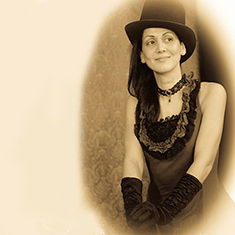
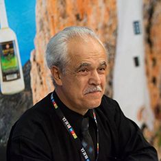

Η Μαρία Βεκρή γεννήθηκε την 1η Μαΐου 1975 για να γίνει φωτογραφος.

Αντώνης Βεκρής
1974: Ανοίγει το πρώτο Photo Studio, στην Αγ. Δημητρίου 163 στον Άγιο Δημήτριο.
1980: Είναι το πρώτο φωτογραφείο στην Ελλάδα που αποκτά τα δικά του μηχανήματα και εμφανίζει φιλμ σε μια ώρα. Τα άλλα φωτογραφεία παραδίδουν τα φιλμ σε εφτά ημέρες και εμφανίζουν τις φωτογραφίες στα μεγάλα εργαστήρια Kodak, Agfa, κ.λπ.
1981: Είναι ο πρώτος φωτογράφος που ξεκινάει την φωτογράφηση των θαμώνων των νυχτερινών κέντρων και παραδίδει τις φωτογραφίες στα τραπέζια σε μία ώρα.
1984: Ανοίγει και δεύτερο Photo Studio, στην Αγ. Δημητρίου 292
1988: Ιδρύει την βιομηχανία κορνιζών Fantastic Frames όπου κατασκευάζει κορνίζες από ξύλο και τροφοδοτεί καταστήματα σε όλη την Ελλάδα.
1989: Παίρνει το πρώτο Δίπλωμα Ευρεσιτεχνίας από τον Οργανισμό Βιομηχανικής Ιδιοκτησίας (OBI) για τον τρόπο στήριξης των κορνιζών.
1994: Συμμετέχει με δικό του περίπτερο στην παγκόσμια έκθεση "Photokina", στην Κολωνία της Γερμανίας.
1996: Ανοίγει το τρίτο Photo Studio, στην Θουκυδίδου 29, στο Καλαμάκι, εξοπλίζοντάς το με τα πλέον σύγχρονα μηχανήματα.
1998: Ανοίγει την Gallery "Fantastic" στην Αγ. Δημητρίου 314, όπου πουλάει έργα τέχνης και κορνιζάρει παντός είδους θέματα.
1999: Ιδρύει την ανώνυμη εταιρεία "Όμιλος Επιχειρήσεων Αντώνης Π. Βεκρής & Τέκνα ΑΕΒΕ", την οποία στελεχώνουν τα πέντε παιδιά του.
2000: Εξοπλίζει τα φωτογραφεία του με τα πιο σύγχρονα μηχανήματα ψηφιακής φωτογραφίας.
2003: Ιδρύει την ποτοποιία "Αμοργός" και παρασκευάζει το παραδοσιακό ποτό ρακόμελο "Αμόργιον".
ΣΗΜΕΡΑ: Με το ίδιο πάθος που ξεκίνησε, συνεχίζουν, ο ίδιος και τα παιδιά του, να προσφέρουν μέσα από τις επιχειρήσεις τους τις υπηρεσίες τους.